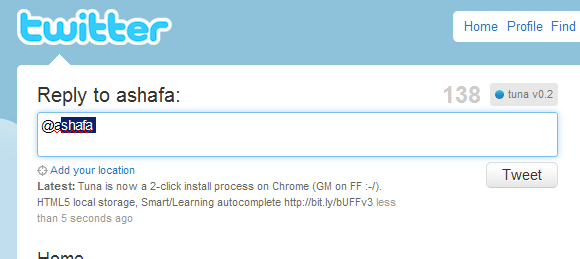

Do you use twitter? Is twitter.com your favorite twitter client? Do you hate looking for or typing twitter usernames only to have it misspelled? If you answered 'yes' to any of these questions then I've got a treat for you.
Tuna (Twitter.com UserName Autocomplete) is a javascript bookmarklet, when enabled on twitter.com, provides twitter username autocomplete functionality to the status textarea.
To start using Tuna, drag the icon below to your 'Bookmarks Toolbar' to create the bookmarklet. When next you are on twitter.com, all you need to do is click on the 'tuna' bookmarklet.
tunaTuna uses screen names of users in your activity stream for autocomplete candidates. Unfortunately, Tuna only remembers candidates until you reload or refresh twitter.com (An HTML5 Web Storage solution is in the works). Clicking on the twitter logo on the top right of twitter.com reloads the page, therefore disables Tuna (Clicking on the 'Home' link in the right side navigation is recommended). You would then have to click on the 'tuna' bookmarklet to re-enable Tuna.
Tuna does not save, collect, or send any information to any remote servers. All data is stored locally in your browser. Tuna source code can also be found on github.
If you would like to make any suggestions, feedback, or support you can follow me on twitter here.
Tuna or ashafa.com are not affiliated with Twitter in any way, shape, or form.